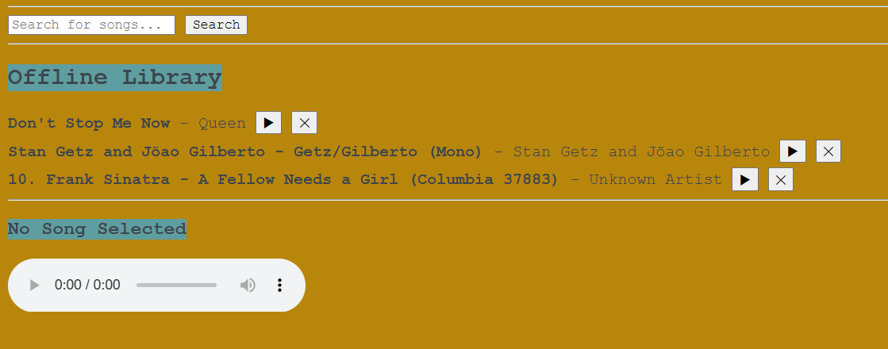

Bard is a music player PWA. Users can search for their desired songs, play it, or save it for offline listening. To install the web app (for desktop), navigate to the top right of the URL hotbar and click the install icon. For mobile devices, click the share icon of browser, scroll down and press "Add to Home Screen" or alike.
As the nature of a PWA, Bard's offline functionalities consist of being able to play previously saved songs. To retrieve this, a function to render the offline library is invoked in the app. If the user is offline, the service worker will cache the asynchronous function and fetch the request. For song look up, internet access is required, and calls are made to the API. Bard utilizes the Internet Archive's audio library, but is catered towards music and sorted through popularity. The save songs procedure is handled by caching the audio source from the API and stored into the offline library database.
"downloadedSongs": [
{
"id": "grateful-dead-live-1977",
"title": "Scarlet Begonias (Live)",
"artist": "Grateful Dead",
"audioUrl": "https://archive.org/download/grateful-dead-live-1977/scarlet-begonias.mp3",
"downloadedAt": "2026-05-20T14:22:00Z",
"fileSizeBytes": 8430592
},
{
"id": "miles-davis-kind-of-blue",
"title": "So What",
"artist": "Miles Davis",
"audioUrl": "https://archive.org/download/miles-davis-kind-of-blue/so-what.mp3",
"downloadedAt": "2026-05-21T09:10:00Z",
"fileSizeBytes": 11534336
}
],
Reference to source code